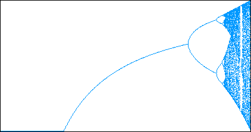

For the logistic map the range of s-values is
|  |
The logistic bifurcation diagram certainly has much more structure than the tent bifurcation diagram. One thing we notice is the big sequence of branches (starting at s = 3) opening to the right. This is the sequence of period-doubling bifurcations,
Moreover, at least one of the periodic windows seems to be visible around s = 3.85. We investigate this window with a zoom.
Return to Bifurcation Diagrams for the Tent Map and the Logistic Map.